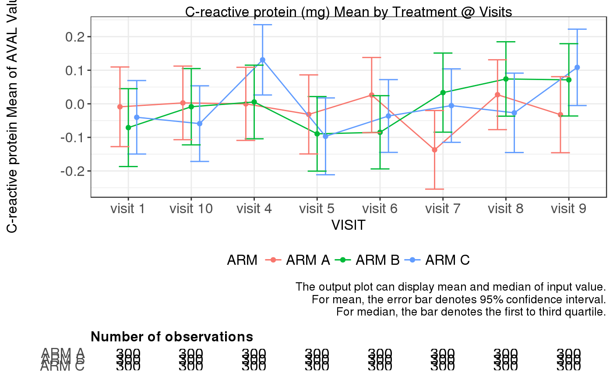

g_lineplot.RdThis function is rendered by teal.goshawk module
g_lineplot(label = "Line Plot", data, biomarker_var = "PARAMCD", biomarker_var_label = "PARAM", biomarker, value_var = "AVAL", unit_var = "AVALU", ylim = NULL, trt_group, trt_group_level = NULL, time, time_level = NULL, color_manual = NULL, median = FALSE, hline = NULL, xtick = waiver(), xlabel = xtick, rotate_xlab = FALSE, font_size = 12, dodge = 0.4)
| label | text string to be displayed as plot label. |
|---|---|
| data | data frame with variables to be summarized and generate statistics which will display in the plot. |
| biomarker_var | name of variable containing biomarker names. |
| biomarker_var_label | name of variable containing biomarker labels. |
| biomarker | biomarker name to be analyzed. |
| value_var | name of variable containing biomarker results. |
| unit_var | name of variable containing biomarker result unit. |
| ylim | numeric vector to define y-axis range. |
| trt_group | name of variable representing treatment group. |
| trt_group_level | vector that can be used to define the factor level of trt_group. |
| time | name of vairable containing visit names. |
| time_level | vector that can be used to define the factor level of time. Only use it when x-axis variable is character or factor. |
| color_manual | vector of colors. |
| median | boolean whether to display median results. |
| hline | numeric value represnting intercept of horizontal line. |
| xtick | numeric vector to define the tick values of x-axis when x variable is numeric. Default value is waiver(). |
| xlabel | vector with same length of xtick to define the label of x-axis tick values. Default value is waiver(). |
| rotate_xlab | boolean whether to rotate x-axis labels. |
| font_size | control font size for title, x-axis, y-axis and legend font. |
| dodge | control position dodge |
ggplot object
Currently, the output plot can display mean and median of input value. For mean, the error bar denotes 95% confidence interval. For median, the error bar denotes median-25
# EXAMPLE: library(dplyr) library(ggplot2) library(gridExtra) library(grid) library(stringr) ANL <- expand.grid( USUBJID = paste0("p-",1:100), VISITN = c(1, 4:10), ARM = c("ARM A", "ARM B", "ARM C"), PARAMCD = c("CRP", "IGG", "IGM"), PARAM = c("C-reactive protein", "Immunoglobulin G", "Immunoglobulin M") ) ANL$VISIT <- paste0("visit ", ANL$VISITN) ANL$AVAL <- rnorm(nrow(ANL)) ANL$CHG <- rnorm(nrow(ANL), 2, 2) ANL$CHG[ANL$VISIT == "visit 1"] <- NA ANL$PCHG <- ANL$CHG/ANL$AVAL*100 ANL$AVALU <- 'mg' ANL$ARM <- factor(ANL$ARM) ANL$VISIT <- factor(ANL$VISIT) g_lineplot(label = 'Line Plot', data = ANL, biomarker_var = 'PARAMCD', biomarker = 'CRP', value_var = 'AVAL', trt_group = 'ARM', time = 'VISIT', color_manual = NULL, median = FALSE, hline = NULL, rotate_xlab = FALSE)